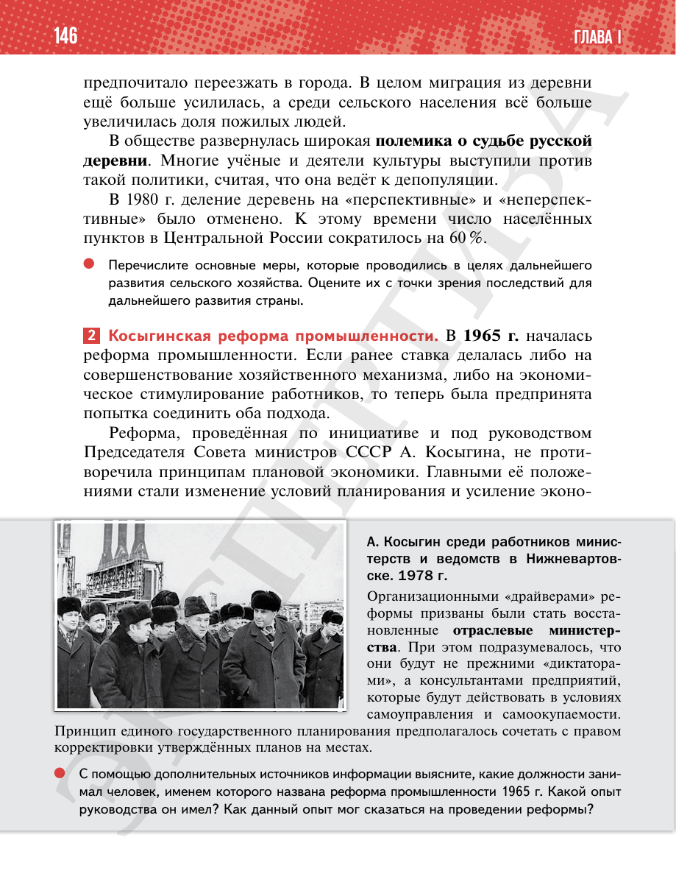

⌂
Мединский.нет
Последнее обновление: 30.08.2026
Мединский.нет
›
История России. 11 класс. Базовый уровень
›
Глава I. СССР в 1945—1991 гг.
›
§ 12. Социально-экономическое развитие СССР в 1964—1985 гг.
›
стр. 146

← стр. 145
Оглавление
стр. 147 →
×